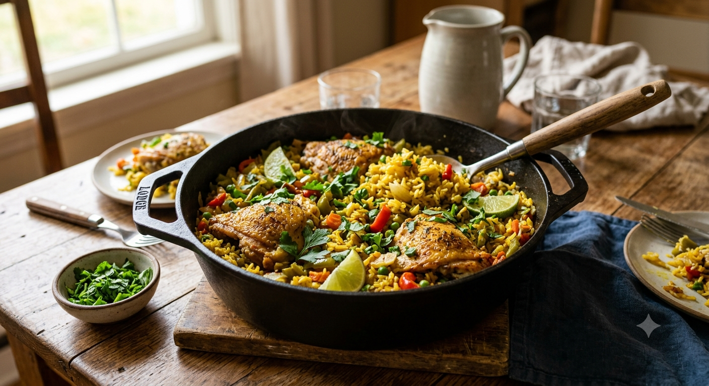

One Pot Chicken Rice

AI generated image
Want to cook biryani but don't have the patience? Need a quick, protein-rich everyday meal? This could be the answer.. It surely won't beat your biryani with a preparation time of 5 minutes and cooking time of 20 minutes but it'll satisfy your protein goals as well as your tastebuds. 've experimented with this quite a bit, and this is the version I like best. We'll be using a pressure cooker for this.
Ingredients needed for 2 servings
- 1 cup rice
- 500 g chicken, cut in large pieces
- Water
- 200 g curd
- 1 teaspoon Biryani Masala
- 2 teaspoons ginger-garlic paste or half finely chopped or minced garlic bulb and a small ginger, grated
- 1 tablespoon oil
- 2 large potatoes cut in half
- Green chillies as per your preference, slit vertically.
- 1 large onion, chopped
- 1 medium sized tomato, chopped
- 1/2 teaspoon salt
- 1/4 teaspoon black pepper
- Quarter teaspoon turmeric powder
- 1/2 cup mixed vegetables
- 1 pc small lemon thinly sliced
- Chopped coriander half a handful.
Instructions
- Mix the chicken well with curd, biryani masala, turmeric powder, black pepper, ginger-garlic paste, a little bit of salt. Marinate the chicken for as much time you have, I'd suggest 30 minutes to an hour.
- Rinse the rice thoroughly and drain it until there's not much starch left or as much your available time allows you to.
- Heat the oil in a pressure cooker over medium heat.
- Add the sliced lemon and fry 'til deep brown then take it out of the pan.
- Add the onion and potatoes to the same oil. Cook until the onions are light brown.
- Fry the marinated chicken for about 7 minutes along with the green chillies.
- Add the tomato, black pepper, and salt as per taste. Cook for 2 minutes.
- Add the mixed vegetables and cook for another 2 minutes.
- Add the rice and stir everything together.
- Pour in the water just upto the level when it starts to cover the whole thing and a little more.
- Cover the pressure cooker with the lid and cook until two whistles
- Turn off the heat and let the pressure release, covered, for 5-7 minutes.
- Mix the chopped coriander with the whole thing and serve.
- Bonus: After opening the lid and while it's still hot you can also crack 3-4 eggs directly, mix well and let it rest for a min with the pressure cooker covered. The eggs get cooked well in the heat.
Serving
This recipe makes approximately 2 servings.
Back to home